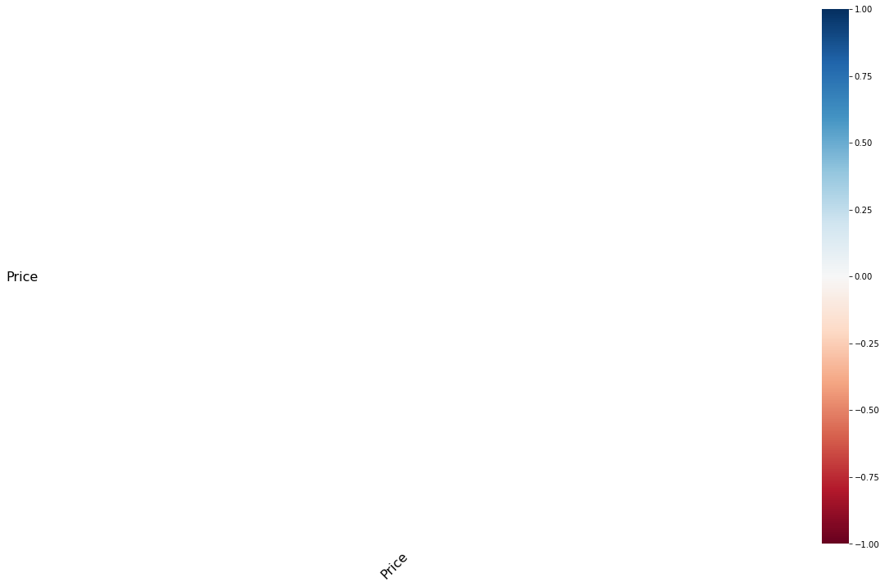
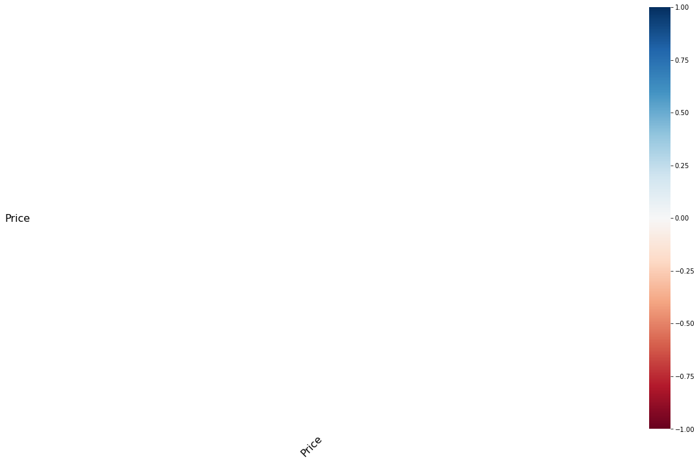

5. Limpieza de los datos¶
Tras es análisis de la variables hemos detectado tanto duplicidades en los datos como presencia de datos faltantes. Procedemos a la limpieza de los datos para la posterior construcción de un modelo mas exacto.
En primer lugar, cargamos todas las librerias necesarias y el archivo de código.
5.1 Eliminacion de duplicados¶
En el análisis de las variables cualitativas obsevamos que algunos datos tenian la misma dirección y precio. Basándonos en este razonamiento, buscamos las filas que tengan las variables ‘Suburb’, ‘Address’,’Postcode’y ‘CouncilArea’ iguales y también en las que las variables “Adress”, ” Prices” y “Date” coincidan. Con le objetivo de no eliminar datos que no estuvieran duplicados mantuvimos los que se encontraban solo en uno de los dataframes.
import pandas as pd
data = pd.read_csv('/home/inma/HH_intro_git_ds/Melbourne_housing_FULL.csv')
%run -i fundamentos_datos_variables.py
data_duplicados=eliminar_duplicados(data)
print("El número de datos duplicados eliminados es", ((len(data))-(len(data_duplicados))))
> /home/inma/HH_intro_git_ds/practicaFundamentosAD/fundamentos_datos_variables.py(123)eliminar_duplicados()
121 def eliminar_duplicados(dataframe_bueno):
122 import pdb;pdb.set_trace()
--> 123 duplicateRowsDF=pd.DataFrame()
124 duplicateRowsDF = dataframe_bueno[dataframe_bueno.duplicated(['Suburb', 'Address','Postcode','CouncilArea',],keep=False)]
125 duplicateRowsDF=duplicateRowsDF.drop_duplicates(subset=['Address','Price','Date'])
---------------------------------------------------------------------------
StdinNotImplementedError Traceback (most recent call last)
~/HH_intro_git_ds/practicaFundamentosAD/fundamentos_datos_variables.py in <module>
2 data = pd.read_csv('/home/inma/HH_intro_git_ds/Melbourne_housing_FULL.csv')
3 get_ipython().run_line_magic('run', '-i fundamentos_datos_variables.py')
----> 4 data_duplicados=eliminar_duplicados(data)
5 print("El número de datos duplicados eliminados es", ((len(data))-(len(data_duplicados))))
~/HH_intro_git_ds/practicaFundamentosAD/fundamentos_datos_variables.py in eliminar_duplicados(dataframe_bueno)
121 def eliminar_duplicados(dataframe_bueno):
122 import pdb;pdb.set_trace()
--> 123 duplicateRowsDF=pd.DataFrame()
124 duplicateRowsDF = dataframe_bueno[dataframe_bueno.duplicated(['Suburb', 'Address','Postcode','CouncilArea',],keep=False)]
125 duplicateRowsDF=duplicateRowsDF.drop_duplicates(subset=['Address','Price','Date'])
~/HH_intro_git_ds/practicaFundamentosAD/fundamentos_datos_variables.py in eliminar_duplicados(dataframe_bueno)
121 def eliminar_duplicados(dataframe_bueno):
122 import pdb;pdb.set_trace()
--> 123 duplicateRowsDF=pd.DataFrame()
124 duplicateRowsDF = dataframe_bueno[dataframe_bueno.duplicated(['Suburb', 'Address','Postcode','CouncilArea',],keep=False)]
125 duplicateRowsDF=duplicateRowsDF.drop_duplicates(subset=['Address','Price','Date'])
~/anaconda3/lib/python3.8/bdb.py in trace_dispatch(self, frame, event, arg)
86 return # None
87 if event == 'line':
---> 88 return self.dispatch_line(frame)
89 if event == 'call':
90 return self.dispatch_call(frame, arg)
~/anaconda3/lib/python3.8/bdb.py in dispatch_line(self, frame)
110 """
111 if self.stop_here(frame) or self.break_here(frame):
--> 112 self.user_line(frame)
113 if self.quitting: raise BdbQuit
114 return self.trace_dispatch
~/anaconda3/lib/python3.8/pdb.py in user_line(self, frame)
259 self._wait_for_mainpyfile = False
260 if self.bp_commands(frame):
--> 261 self.interaction(frame, None)
262
263 def bp_commands(self, frame):
~/anaconda3/lib/python3.8/site-packages/IPython/core/debugger.py in interaction(self, frame, traceback)
303 def interaction(self, frame, traceback):
304 try:
--> 305 OldPdb.interaction(self, frame, traceback)
306 except KeyboardInterrupt:
307 self.stdout.write("\n" + self.shell.get_exception_only())
~/anaconda3/lib/python3.8/pdb.py in interaction(self, frame, traceback)
354 return
355 self.print_stack_entry(self.stack[self.curindex])
--> 356 self._cmdloop()
357 self.forget()
358
~/anaconda3/lib/python3.8/site-packages/IPython/core/debugger.py in _cmdloop(self)
788 # the current command, so allow them during interactive input
789 self.allow_kbdint = True
--> 790 self.cmdloop()
791 self.allow_kbdint = False
792 break
~/anaconda3/lib/python3.8/site-packages/IPython/core/debugger.py in cmdloop(self)
774 """Wrap cmdloop() such that KeyboardInterrupt stops the debugger."""
775 try:
--> 776 return OldPdb.cmdloop(self)
777 except KeyboardInterrupt:
778 self.stop_here = lambda frame: False
~/anaconda3/lib/python3.8/cmd.py in cmdloop(self, intro)
124 if self.use_rawinput:
125 try:
--> 126 line = input(self.prompt)
127 except EOFError:
128 line = 'EOF'
~/anaconda3/lib/python3.8/site-packages/ipykernel/kernelbase.py in raw_input(self, prompt)
855 """
856 if not self._allow_stdin:
--> 857 raise StdinNotImplementedError(
858 "raw_input was called, but this frontend does not support input requests."
859 )
StdinNotImplementedError: raw_input was called, but this frontend does not support input requests.
5.2 Detección e Imputación de Datos Faltantes¶
Una vez eliminiados los datos duplicados, para finalizar la preparación de los datos es necesario eliminar los datos faltantes.
Para ellos en primer lugar representamos gráficamente los datos faltantes en cada una de las variables realizando una función de visualización.
%run -i fundamentos_datos_missings.py
visualizacion_missings(data_duplicados)
Suburb 0
Address 0
Rooms 0
Type 0
Price 0
Method 0
SellerG 0
Date 0
Distance 1
Postcode 1
Bedroom2 6280
Bathroom 6286
Car 6655
Landsize 9049
BuildingArea 16204
YearBuilt 14804
CouncilArea 3
Lattitude 6097
Longtitude 6097
Regionname 3
Propertycount 3
dtype: int64
Se detecta que hay variables donde no existen datos faltantes mientras que en otras el número es muy alto, como vimos en el EDA inicial.
En este punto es importante seleccionar de forma adecuada la imputación de los mismo. Directamente descartamos las variables “YearBuilt”, “BuildingArea” y “Bedroom2” ya que presentan muchos datos faltantes, además de una baja correlación y/o muchas similitud con otras variables como en el caso de “Bedrooms2” y “rooms”.
Por otro, lado procedemos a imputar los datos restantes, para ellos realizaremos una función que complete los datos fataltantes usando un modelo de regresiñon lineal o random forest, en función de cual de los dos es más adecuado.
En primer lugar, usamos la función “Kfold()” para separar nuestros datos en 5 partes, usaremos 4 como training y una como test. Cada una de las variables tendrá por lo tanto 4 grupos diferentes para realizar la regresión lineal y el random forest, usaremos estos modelos para cálcular la media de los errores cuadráticos del resultado de ambos modelos con el grupo “test”.
Finalmente, la función selecciona el mejor modelo y con el completa los datos faltantes en el dataframe de cada una de las variables. Para mejorar la exactitud del modelo cada vez que una variable es completada se incluye dentro de los modelos para ser usada en el cálculo de las siguientes variables.
data_no_missings = pd.read_csv('/home/inma/HH_intro_git_ds/precios_casas_sinduplicados_indexTRUE.csv')
data_no_missings["Price"]=data["Price"]
#Eliminamos los missings restantes
dataframe=data_no_missings.dropna(subset=['Distance'])
dataframe=dataframe.dropna(subset=['Regionname'])
dataframe=dataframe.dropna(subset=['Regionname'])
dataframe=dataframe.dropna(subset=['CouncilArea'])
dataframe=dataframe.dropna(subset=['Propertycount'])
dataframe=dataframe.dropna(subset=['Postcode'])
visualizacion_missings(dataframe)
Unnamed: 0 0
Suburb 0
Address 0
Rooms 0
Type 0
Price 7610
Method 0
SellerG 0
Date 0
Distance 0
Postcode 0
Bathroom 0
Car 0
Landsize 0
CouncilArea 0
Lattitude 0
Longtitude 0
Regionname 0
Propertycount 0
dtype: int64
 

dataframe.to_csv("Seleccion_variables.csv")